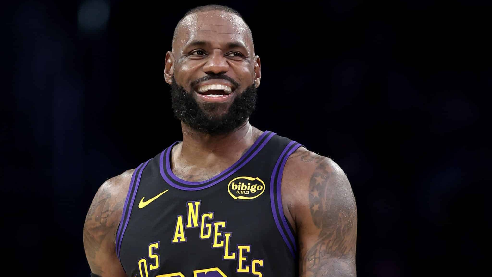

LeBron James
Biografia
LeBron James nasceu em 1984, em Akron, Ohio, e foi considerado um prodígio do basquete ainda no ensino médio. Ele foi selecionado como a primeira escolha do Draft da NBA de 2003 pelo Cleveland Cavaliers, entrando na liga já como uma grande promessa. Ao longo da carreira, jogou por Cavaliers, Miami Heat e Los Angeles Lakers, se consolidando como um dos atletas mais completos da história.
LeBron é conhecido por sua combinação única de força física, inteligência de jogo e versatilidade, conseguindo atuar em várias posições. Ele venceu múltiplos campeonatos da NBA e foi eleito MVP diversas vezes. Além disso, também se destaca por sua longevidade no alto nível, mantendo desempenho de elite mesmo após muitos anos na liga.
Time Atual
Los Angeles Lakers

Títulos e Conquistas
- 4x Campeão da NBA
- 4x MVP da Temporada
- 4x MVP das Finais
- Maior pontuador da história da NBA
- 20+ All-Star Games
- 3 Medalhas de Ouro Olímpicas
Curiosidades
- Conhecido como "King James"
- Entrou direto do ensino médio na NBA
- Grande atuação em projetos sociais
- Um dos atletas mais influentes do mundo